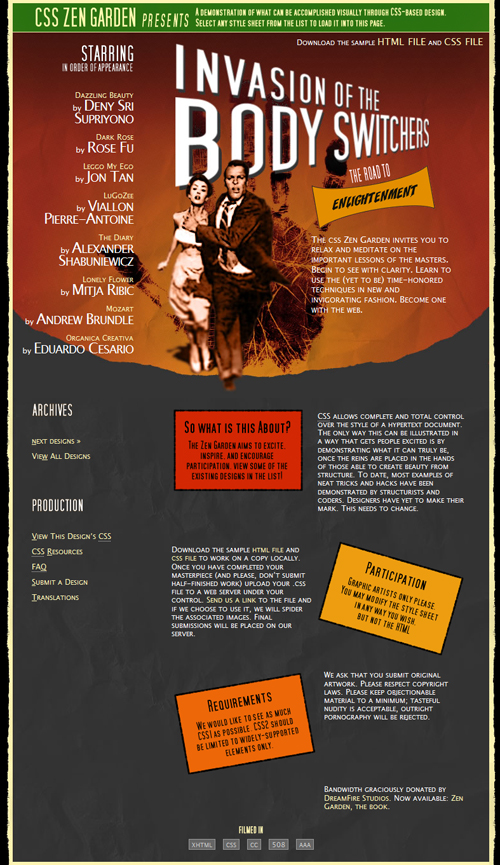

The domReady function handles DOMContentLoaded events in your browser. If a browser doesn't support the DOMContentLoaded event, it will be simulated. A DOMContentLoaded event allows you to add behavior or change the HTML of a page after the HTML has loaded and before the onload event which happens after the complete page, including images has loaded. This allows you to add menu, tree behavior, AJAX functionality or anything else without having to wait for all items on a page to load. You may have experienced the need for a DOMContentLoaded event on a page that includes drop down menus or a tabbed interface which doesn't work until all images have loaded. Using the DOMContentLoaded event allows you to add the behavior before images and objects have loaded.
The alert log will display the time of each event. The following events are called:
A large image is loaded to provide a delay so that you can see the difference in time between the DOMContentLoaded and load events.

Footer